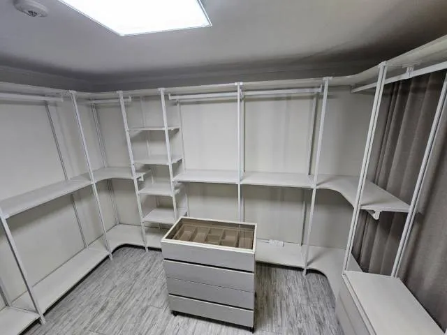

Cost
시스템행거 이전설치
비용
같은 행거라도 옮기는 조건에 따라 비용이 달라집니다.
이전설치 비용은 행거 크기 하나로 정해지지 않습니다. 해체할 칸 수와 서랍·거울 같은 부속, 양쪽 집의 층수와 엘리베이터, 이동 거리, 그리고 새 공간에서 배치를 바꾸는지에 따라 작업 시간과 인원이 달라지기 때문입니다.
그래서 코니처는 사진과 치수를 먼저 보고 비용을 안내합니다. 확인 없이 대략의 금액을 먼저 말씀드리지 않는 대신, 어떤 조건 때문에 비용이 정해지는지 설명드립니다.

Situations
비용이 달라지는 대표적인 경우
칸 수가 많을 때
해체·설치할 폴과 선반이 늘어 작업 시간이 길어집니다.
부속이 많을 때
서랍장·거울·화장대는 따로 분리하고 포장합니다.
배치를 바꿀 때
새 공간에 맞춰 구성을 다시 짜는 시간이 더해집니다.
이동 조건이 까다로울 때
엘리베이터가 없거나 거리가 멀면 운반 부담이 커집니다.
Checklist
비용을 정하는 조건
| 조건 | 확인 방법 | 비용에 주는 영향 |
|---|---|---|
| 칸 수·폭 | 정면 사진, 전체 폭 | 작업 시간 |
| 부속 | 서랍장·거울·화장대 유무 | 분리·포장 시간 |
| 배치 변경 | 새 공간 치수 | 재구성 시간 |
| 층수·엘리베이터 | 양쪽 집 조건 | 운반 인원과 시간 |
| 이동 거리·일정 | 주소, 같은 날 진행 여부 | 방문 횟수 |
Process
비용 안내까지의 순서
사진 보내기
행거 정면 사진과 부속 사진을 보내주세요.
조건 알려주기
층수, 엘리베이터, 이동 거리, 희망 일정을 알려주세요.
새 공간 확인
배치를 바꿀지 판단할 치수를 확인합니다.
비용 안내
조건을 바탕으로 비용과 작업 범위를 안내합니다.
일정 확정
내용을 보시고 결정하시면 방문 날짜를 정합니다.
FAQ
자주 묻는 질문
대략이라도 금액을 알 수 있나요?
조건마다 차이가 커서 사진과 치수를 보기 전에는 안내드리기 어렵습니다. 사진을 보내주시면 확인해 드립니다.
사진은 몇 장 보내면 되나요?
행거 정면 한 장, 서랍장·거울 같은 부속 한 장, 새 공간 한 장이면 충분합니다.
해체만 하거나 설치만 해도 되나요?
네, 해체와 설치를 나눠 맡기실 수 있고 비용도 작업 범위에 맞춰 안내합니다.
배치를 바꾸면 비용이 더 드나요?
새 구성을 짜고 부품을 옮겨 다는 시간이 더해질 수 있습니다. 작업이 간단한 배치 안도 함께 안내합니다.
현장 상황이 사진과 다르면요?
보내주신 사진과 현장이 크게 다르면 작업 전에 먼저 설명드립니다.